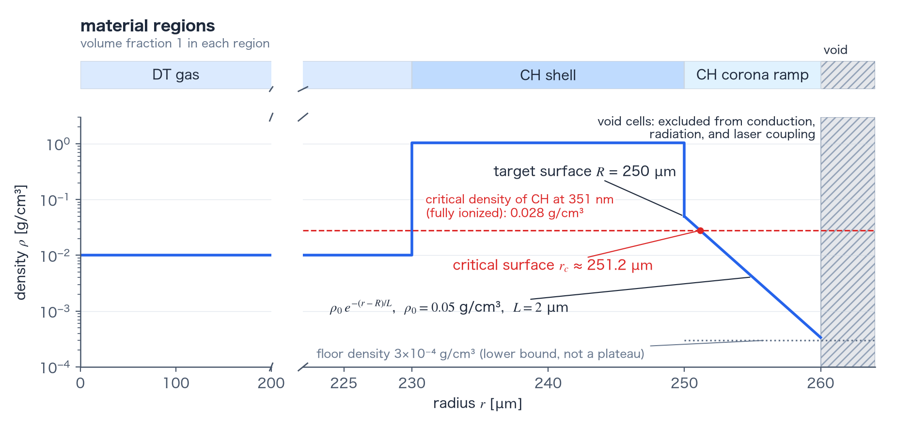

1D meshes: zoning & regions reference
TENRYU's 1D domain is a radial sequence of nodes. The nodes are placed either uniformly, with equal cell widths, or by graded zoning, which changes the cell size from segment to segment. The coordinate system is spherical, cylindrical, or planar, and this choice sets how areas and volumes are assigned to the same node sequence, that is, the measure. The material distribution comes from the function Geometry.volfrac in the deck, as a volume fraction for each cell. Outside the grid, void cells and a low-density corona ramp, which stands for a pre-plasma, can be added. Terms specific to this calculation are defined in the terms section.
Physical mechanism
In a Lagrangian 1D implosion, the grid is part of the error budget: the initial zoning determines the resolution history because every cell keeps its mass. Placing mass at the ablator surface and the fuel–shell interface therefore places resolution where steep gradients will exist at bang time. Graded zoning spends cells there (segments and graded zoning). The super-Gaussian weight decreases smoothly and monotonically from the segment center to its ends (the weight and its parameters), and the cell mass is made proportional to this weight (how closely depends on the mapping; mapping and measure), so the cell width changes smoothly within a segment; abrupt jumps in cell size can numerically reflect acoustic and shock signals.
Spherical, cylindrical, and planar coordinates enter mainly through measures. The same node sequence is interpreted with the appropriate face area \(A(r)\) and shell volume \(V(r_0,r_1)\) (equations in the next section). The exception is the exact_measure_v2 mapping, which also moves the nodes with the measure. For a thin shell at large radius, the factored spherical-volume form avoids the catastrophic cancellation suffered by a direct difference of nearly equal cubes.
Material regions are specified by volume fraction, so material layout is independent of grid construction (regions and volume fractions). A void cell is identified by the cell_is_void mask and excluded from the coupling to electron conduction, radiation, and the laser; its initial density and temperature are set by Materials.void_config (void cells). Treating vacuum as an ordinary low-density material would instead create enormous thermal diffusivities. Heating a cold solid with the laser also requires a corona outside the solid surface, and there are two ways to provide it. The corona ramp is a layer placed in the initial fluid profile. The ghost corona (key Laser.lasermesh.ghost_corona) is a virtual corona placed on the laser mesh only. This page covers the corona ramp (the corona ramp and the ghost corona). The corona ramp must decrease strictly monotonically to the void cells; a plateau has been observed to grow a numerical instability once the laser is applied (see the corona section below).
- Weight parameters: \(\epsilon_{\rm edge}\) (
Mesh.grid.grading.edge_ratio), \(\sigma_{\rm sg}\) (grading.sg_sigma), and \(m_{\rm sg}\) (grading.sg_order) set the shape of the weight within a segment. Their definitions and defaults are given in the weight and its parameters. - Mapping:
grading.mappingselects the procedure that turns the weights into node positions. The default islegacy_estimated_radius; withexact_measure_v2, at constant density, cell masses, not cell widths, follow the weights (mapping and measure). - Generation checks: every width must be finite and positive, the widths of each segment must sum to the segment length, and the assembled nodes must be strictly increasing; the last node is then set to the requested outer endpoint.
1D coordinate geometry and zoning
Mesh.geometry_1d interprets one node sequence \(r_j\) with different coordinate measures. For spherical symmetry, a cylinder of unit axial length, and a plane of unit cross-sectional area, respectively, the face area and cell volume are
Here \(r\) is the radius, and \(r_0\) and \(r_1\) are the inner and outer radii of the shell. Node \(j=0,\ldots,N\) carries a cell-boundary position and velocity; cell \(i=0,\ldots,N-1\) carries density, internal energies, temperatures, pressures, and related state for the radii from \(r_i\) to \(r_{i+1}\). For thin spherical shells, the implementation uses a factored volume expression where needed to avoid cancellation in the difference of cubes. The default spherical path preserves its established floating-point operation order, and every geometry continues to use internal cgs units.
Mesh.grid="uniform" divides the radius from Mesh.r_min to Mesh.r_max into Mesh.nr cells of equal width. Giving Mesh.grid the value type="graded" makes it accept a list of contiguous radial segments and a cell count for each segment (segments and graded zoning). With \(n_s\) the segment's cell count and \(k=0,\ldots,n_s-1\) the cell index within the segment, it forms a super-Gaussian weight at the normalized cell center \(\xi_k=(k+1/2)/n_s\),
where \(\epsilon_{\rm edge}\), \(\sigma_{\rm sg}\), and \(m_{\rm sg}\) are the three parameters that set the shape of the weight (the weight and its parameters). The mapping then determines the cell widths from these weights (mapping and measure). Segment length is preserved exactly, and the target widths on the two sides of an internal segment boundary use their geometric mean. The opt-in exact_measure_v2 mapping inverts the cumulative weights through the exact spherical, cylindrical, or planar shell measure, so constant-density cell masses follow the weights. Generation checks finite positive widths, a width sum equal to each segment's length, and a strictly increasing node sequence, and then sets the last node to the requested outer endpoint.
Terms used in this calculation
The 1D grid is built from segments, weights, and a mapping. The material distribution is given by regions, void cells, and the corona ramp. These terms carry meanings specific to TENRYU's implementation, so they are defined here together.
Segments and graded zoning
A segment is the radial range that serves as the unit from which a graded grid is built. The segments are listed in segments of Mesh.grid in the form {"r_start": …, "r_end": …, "nr": …}. Let \(r_{\rm start}\) be the inner radius, \(r_{\rm end}\) the outer radius, and \(n_s\) (nr) the cell count. Neighboring segments share an end, and the node sequence runs from the r_start of the first segment to the r_end of the last. The sum of the segment cell counts is the total cell count; when it differs from Mesh.nr, a warning is issued and the sum is used. The total cell count must be at least 4. A segment whose r_end is not above its r_start, a segment with fewer than 1 cell, and a list of segments whose ends do not match are rejected as errors. TENRYU Studio (hereafter Studio), the deck-generation GUI, starts from a uniform grid without segments, with Mesh.nr equal to 300.
Graded zoning changes the cell size from segment to segment according to the weight (next item) and concentrates fine cells at the segment ends. Aligning the ends with material interfaces or the target surface places resolution where steep gradients will appear at maximum compression. At constant density, the cell mass is proportional to the weight (how closely depends on the mapping), and a cell at a segment end has less mass than a cell at the center. Without segments, the whole range from Mesh.r_min to Mesh.r_max is one segment divided into Mesh.nr cells of equal width (the same as Mesh.grid="uniform"). Cells of equal width have larger volume and mass farther out in spherical and cylindrical measures.
At the boundary between neighboring segments, the target for the widths on both sides is the geometric mean of the width of the last cell of the left segment and the width of the first cell of the right segment, so that the cell width is continuous. Each segment replaces the widths of its end cells with these targets and scales the remaining cells by a common factor to preserve the segment length. When a segment has too few cells to satisfy both end targets and the segment length at once, generation aborts through an assert.
The weight and its parameters
The weight \(w_k\) is the relative mass allotted to cell \(k\) of a segment (equation in 1D coordinate geometry and zoning). It is close to 1 at the segment center, decreases toward the ends, and takes the value \(\epsilon_{\rm edge}+(1-\epsilon_{\rm edge})\exp[-(1/\sigma_{\rm sg})^{m_{\rm sg}}]\) at the end (\(|2\xi_k-1|\to1\); 0.114 for the default values). With the exact_measure_v2 mapping, at constant density, the mass of cell \(k\) is \(w_k/\sum_lw_l\) of the segment mass; with the default mapping, this proportionality is approximate. The shape of the weight is set by three parameters of Mesh.grid.grading. Unspecified parameters take the default values, and Studio writes the same values.
- \(\epsilon_{\rm edge}\) (
edge_ratio, default 0.1, greater than 0 and less than 1) is the lower bound of the weight. The mass of an end cell is slightly larger than \(\epsilon_{\rm edge}\) times the mass of the central cell. As the value approaches 1, the weight becomes uniform over the whole segment. - \(\sigma_{\rm sg}\) (
sg_sigma, default 0.7, greater than 0 and less than 1) sets where the decrease from the center toward the ends begins. At the position where the normalized distance from the center, \(|2\xi_k-1|\), reaches \(\sigma_{\rm sg}\), the weight is \(\epsilon_{\rm edge}+(1-\epsilon_{\rm edge})/e\) (0.431 for the default values). - \(m_{\rm sg}\) (
sg_order, default 4, an even integer of at least 2) sets the sharpness of that decrease. The larger it is, the flatter the center and the more steeply the weight drops near \(\sigma_{\rm sg}\).
The three parameters set only how the cell mass is distributed within a segment. The segment length, the cell count, and the positions of the segment boundaries do not change. The weight curve for the default values is shown in Figure A(a).
Mapping and measure
The measure is the way the coordinate system assigns areas and volumes (equations in 1D coordinate geometry and zoning). The volume inside radius \(r\) is proportional to \(r^d\), with \(d\) equal to 3 for spherical, 2 for cylindrical, and 1 for planar coordinates. Mesh.geometry_1d (default "spherical") chooses the coordinate system.
The mapping is the procedure that determines the node radii from the weights \(w_k\) of a segment; Mesh.grid.grading.mapping selects it. There are two.
"legacy_estimated_radius"(default) assumes the spherical measure, makes the width of cell \(k\) follow \(\Delta r_k\propto w_k/(r_{{\rm est},k}^2+r_{\rm ref}^2)\), and normalizes the widths to the segment length \(\ell=r_{\rm end}-r_{\rm start}\). Here \(r_{{\rm est},k}=r_{\rm start}+\ell\xi_k\) is a provisional radius of the cell center for equally spaced cells, which does not coincide with the final cell center. The term \(r_{\rm ref}=\ell/\sqrt{n_s}\) suppresses the \(1/r^2\) divergence in a segment that starts at the origin (\(r_{\rm start}<10^{-12}\) cm) and is 0 in other segments. When \(\epsilon_{\rm edge}\) is close enough to 1 (\(1-\epsilon_{\rm edge}\le10^{-12}\)), the mapping returns cells of equal width. The assumption of the spherical measure does not change whenMesh.geometry_1dis cylindrical or planar. Because the mapping uses the provisional radius, the cell mass at constant density departs from the value proportional to the weight. The departure is small in a thin shell far from the origin (for the default weight, the segment 0.023–0.025 cm, and 60 cells, the ratio of mass to weight agrees among the cells to within 4 %). It is large in a segment that starts at the origin, where the inner cells become lighter (for the default weight, the segment 0–1, and 32 cells, the mass of the innermost cell is 0.5 % of the value proportional to the weight, taking the central cell as the reference)."exact_measure_v2"(optional) converts the cumulative weight fraction \(W_k=\sum_{l\le k}w_l/\sum_lw_l\) into node radii through the exact inverse mapping of the measure, \(r_{k+1}^d=r_{\rm start}^d+W_k\,(r_{\rm end}^d-r_{\rm start}^d)\), with \(d\) set byMesh.geometry_1d. In a constant-density segment, the cell mass is proportional to the weight to within rounding error, including in a segment that starts at the origin. The limit \(\epsilon_{\rm edge}\to1\) gives cells of equal mass, which differs from the equal widths of the default mapping. The mapping is 1D only, and specifying it in 2D_RZ is an error. Studio does not writemapping, so Studio decks use the default mapping.
Panels (b) and (c) of Figure A compare the cell widths and masses made by the two mappings in a segment that starts at the origin. With either mapping, the correction of the widths at segment boundaries (segments and graded zoning) is applied last. Even with exact_measure_v2, a deck with several segments loses a little of the proportionality of mass to weight near the boundaries.
![Left: the weight as a function of the normalized position in a segment; it is 1 at the center and 0.114 at the ends, with the lower bound as a dotted line and the weight 0.431 at the position sigma as squares. Middle and right: the cell width (logarithmic axis) and mass fraction made by the two mappings in a segment that starts at the origin; the legacy_estimated_radius mapping (orange circles) gives inner cells a mass below the weight-proportional value, and exact_measure_v2 (blue squares) lies on the dotted line of the weight fraction](../../../assets/mesh-1d-weight-mapping-en.png)
legacy_estimated_radius, blue squares are exact_measure_v2; the dotted line in (b) is the equal width, and the dotted line in (c) is the weight fraction \(w_k/\sum w\). The masses of exact_measure_v2 lie on the dotted line. The innermost cell of legacy_estimated_radius has a mass of only about 0.5 % of the weight-proportional value. In a thin shell (0.023 to 0.025 cm, \(n=60\)), the ratio of mass to weight of legacy_estimated_radius agrees among the cells to within 4 % (computed 0.981 to 1.017), so that case is not drawn. The calculation applies the equations of build_graded_nodes to a single segment with no neighbor.Regions and volume fractions
A region is the unit in which Studio places a material: one layer, stacked from the inside outward in radius. It is given by the outer radius rOuter, the material, the density, the electron temperature, and the ion temperature. The value rOuter increases strictly monotonically from the inside outward. Studio requires the outer radius of the last region to equal Mesh.r_max (or to be smaller than Mesh.r_max when an outer void is used).
The solver does not read the table of regions; it reads functions in the deck. Geometry.volfrac returns the volume fraction of each material (a dimensionless number from 0 to 1), Geometry.rho the density, and Geometry.Te and Geometry.Ti the electron and ion temperatures, all as functions of radius. From the table of regions, Studio writes these functions so that they return piecewise-constant values of radius. The solver evaluates the functions at one point per cell, the radius of the cell midpoint \((r_i+r_{i+1})/2\). A 1D cell consists of one material unless a function returns a value between 0 and 1. A cell whose material volume fractions sum to more than 1 is an error. When the sum is less than 1, the fractions are normalized to sum to 1 if Geometry.enforce_sum_to_one (default True) is set (a cell whose sum is 0 is an error). With False, they are not normalized; the missing part is regarded as void, and the density is multiplied by the sum. The initial cell mass is the product of the evaluated density and the cell volume.
Void cells
A void cell is a cell made only of void material (Material(..., is_void=True)). A cell in which the volume fractions of the materials that are not void material sum to \(10^{-12}\) or less is a void cell, and the cell_is_void mask identifies it. Void cells are excluded from the coupling to electron conduction, radiation, and the laser (definition and treatment in Void materials). The initial density and temperature of a void cell are taken from Materials.void_config, not from the values of the deck's Geometry.rho, Te, and Ti. The defaults are \(\rho=10^{-10}\,\mathrm{g\,cm^{-3}}\) and \(T_e=T_i=10^{-3}\) eV, and Studio writes the same values.
Void cells feel no force, so the nodes of a run of two or more consecutive void cells do not move on their own. In every step, the 1D hydrodynamic update respaces the inner nodes of such a run uniformly between its two end nodes (the node at a material surface or at the domain boundary), sets their velocity to 0, and keeps the cell masses equal to the density of Materials.void_config times the cell volume. These cells are excluded from the physics, so the conserved quantities of real cells are unaffected.
In Studio, enabling "Vacuum (VOID) outside the last region" (internal name vacuumOutside1d, disabled by default) fills the range from the last region (from the outer end of the corona ramp, if there is one) to Mesh.r_max with void material named VOID. The name VOID is reserved by Studio; when the outer vacuum is enabled, a user material of the same name is an error.
The corona ramp
The corona ramp is a layer in which the density falls exponentially outward from the outer surface \(R\) of the target (the outer radius of the last region); it is placed as part of the initial density profile. The cells of the layer are fluid cells with the same material and temperatures as the last region; they carry mass and move with the other cells. Without a corona outside a cold solid surface, the laser is reflected before it is absorbed (the reason is given in the next section). The density of the layer is
$$ \rho(r)=\max\bigl\{\rho_0\exp[-(r-R)/L],\ \rho_{\min}\bigr\},\qquad R\le r\le R_{\rm corona} $$where \(r\) is the radius, \(\rho_0\) is the density at the outer surface, \(L\) is the exponential scale length (the distance over which the density falls to \(1/e\)), \(\rho_{\min}\) is the floor density, and \(R_{\rm corona}\) is the outer end of the layer. In Studio, the form's "Pre-plasma corona ramp" (internal name coronaRamp1d, disabled by default) specifies it through the four input fields below. When it is enabled, the initial values are the same as those of the deck of the GXII (GEKKO XII) regression test.
| Symbol | Studio input field (internal name) | Initial value | Meaning |
|---|---|---|---|
| \(\rho_0\) | "Ramp start density" (rho0) | 0.05 g cm⁻³ | Density at the outer surface \(R\) |
| \(L\) | "Ramp scale length L" (scaleUm) | 2.0 µm | Exponential scale length |
| \(R_{\rm corona}-R\) | "Ramp zone extent" (extentUm) | 10.0 µm | Thickness of the layer |
| \(\rho_{\min}\) | "Ramp floor density" (rhoMin) | 3×10⁻⁴ g cm⁻³ | Lower bound of the layer's density |
The corona ramp can be used only when the outer vacuum is enabled. The outer end of the layer must not exceed Mesh.r_max, and rhoMin must be smaller than rho0. The solver has no key for the corona ramp; Studio writes the expression into the deck's density and volume-fraction functions. The floor density is a value placed inside the deck's function as the lower bound of the layer's density. It is separate from the floors that the solver imposes on the state (Floors, clamps, and safety guards). Where \(\rho_0\exp[-(r-R)/L]\) falls below \(\rho_{\min}\), the density is uniform at \(\rho_{\min}\), a plateau. The condition for the layer to decrease strictly monotonically up to its outer end is \(\rho_0\exp[-(R_{\rm corona}-R)/L]>\rho_{\min}\); the default values meet it, because \(3.37\times10^{-4}\,\mathrm{g\,cm^{-3}}\) exceeds \(3\times10^{-4}\,\mathrm{g\,cm^{-3}}\). Studio does not check this condition.
The corona ramp and the ghost corona
The ghost corona is distinct from the corona ramp. It is a virtual corona placed outside the outermost material cell on the laser mesh, only for the laser's ray tracing, and it does not enter the fluid density, temperature, or mass (1D only). The laser mesh is a radial grid built separately from the fluid grid for ray tracing, and it is fine near the critical surface (see Laser). The power absorbed in the ghost corona is redistributed from the outermost material cell to a few cells inward (the repository's docs/NUMERICS.md §5.7.5). The key is Laser.lasermesh.ghost_corona, disabled by default. Studio labels this feature "Use the ghost corona". Both solve the same problem: there is no corona outside a cold solid surface.
| Item | Corona ramp | Ghost corona |
|---|---|---|
| Where it is placed | The initial fluid mesh (between the last region and the void) | The laser mesh only (outside the outermost material cell) |
| Effect on the fluid | Enters the fluid as cells with mass and moves with the fluid | Does not enter the fluid density, temperature, or mass |
| Setting | The deck's Geometry.rho and Geometry.volfrac (Studio: coronaRamp1d) | Laser.lasermesh.ghost_corona (1D only) |
| Default | Disabled in Studio; the solver has no key | Disabled in the solver and in Studio |
| Studio presets | Not used | Used by the laser-driven presets |
Material regions, void cells, and the corona ramp
The target is given as concentric material regions, such as a central gas, a solid shell, and an outer layer. The solver evaluates the region functions at the radius of the cell midpoint, so when a region boundary lies inside a cell, the midpoint position sets the material of that cell, and an interface is represented to within one cell. To align an interface with a node, place the end of a graded-zoning segment at the region boundary (regions and volume fractions).
Treating the exterior as an ordinary material at a tiny density would leave conduction and radiation coefficients in laser-heated low-density cells. The thermal diffusivity \(\kappa/(\rho c_v)\) is inversely proportional to the density, so it becomes enormous in such a cell, makes the explicit stability limit of conduction (the upper bound of the time step) extremely small, and thereby effectively stalls the calculation by super time-stepping (STS) (see Heat conduction: time integration). The exterior is therefore represented by void cells. A void cell has its thermal conductivity set to 0, so the problem does not arise (definition in void cells).
Without a corona, laser absorption does not start. When a cold solid surface meets the void cells through a one-cell density jump, 351 nm light reflects at the critical density with almost no propagation length, so inverse bremsstrahlung cannot absorb it and no seed exists for a corona grown by heating. In a GXII deck without a corona ramp, the absorbed fraction over the whole 1 ns pulse was only about \(4\times10^{-4}\) (measured in 2026-07). There are two ways to solve this problem: place a corona ramp in the initial fluid profile, or place the ghost corona on the laser mesh (the corona ramp and the ghost corona). The rest of this section covers the corona ramp.
The GXII regression deck uses \(L=2\,\mu\mathrm m\), a \(10\,\mu\mathrm m\) thickness, \(\rho_0=0.05\,\mathrm{g\,cm^{-3}}\), and a floor density of \(3\times10^{-4}\,\mathrm{g\,cm^{-3}}\) for the corona ramp. The 351 nm CH critical density, \(0.028\,\mathrm{g\,cm^{-3}}\) as a mass density assuming fully ionized CH (\(\bar Z=3.5\), \(\bar A=6.5\)), lies inside the density range of the corona ramp (0.05 down to \(3.4\times10^{-4}\,\mathrm{g\,cm^{-3}}\); Figure B). The grid of this deck divides the radius 0–500 µm into 200 equal-width cells of 2.5 µm, so the 10 µm corona ramp is represented by 4 cells, and the critical density (1.2 µm outside the surface) lies inside the first cell touching the surface.
The corona ramp must decrease strictly monotonically to the void cells, with no uniform floor-density plateau. In a GXII deck (2026-07) that put a uniform three-cell plateau of \(\rho=10^{-4}\,\mathrm{g\,cm^{-3}}\) next to the void cells, a checkerboard mode, in which adjacent nodes move in opposite directions, grew exponentially once the laser was applied. With the laser off, the mode does not grow. This is recorded as a known unresolved problem, and the current deck avoids the configuration.

From deck to grid, step by step
Parse and validate. Read the contiguous radial segments and their cell counts, then reject invalid endpoints, counts, or grading parameters as errors (segments and graded zoning).
Form weights. Evaluate the super-Gaussian weight at every normalized cell center in each segment (the weight and its parameters).
Apportion the segment. Convert weights to cell widths with the mapping, inverting the cumulative weights through the exact measure under
exact_measure_v2(mapping and measure). At each internal segment boundary, target the geometric mean of the two adjoining widths.Assemble nodes. Accumulate the segment cells and check finite positive widths, a width sum equal to each segment's length, and strict monotonicity; the last node is set to the outer endpoint.
Assign materials. Independently of how the nodes were generated, evaluate
Geometry.volfrac,rho,Te, andTiat the radius of each cell midpoint to set the volume fractions, density, and temperatures of each cell (regions and volume fractions). A cell made only of void material is identified as a void cell (void cells).Write the exterior layers. Studio writes the outer void and, when it is enabled, the exponential corona ramp into the functions that step 5 evaluates (the corona ramp).
Fix the cell masses. The mass of each cell is the density at the midpoint times the cell volume. Under Lagrangian motion, the cell masses do not change, and the material is carried with the cells.
Namelist controls
These are the principal mesh and deck-side geometry entry points. See the namelist reference for the complete validation rules. The defaults are the values used when the deck does not specify the key; where the value that Studio writes differs, it is added. vacuumOutside1d and coronaRamp1d are internal names of Studio's form, not solver keys.
| Key | Default | Purpose |
|---|---|---|
Mesh.r_min, r_max, nr | None (required). nr must be at least 4. Studio starts with 0, 500 µm, and 300 | Inner and outer radius [cm] and the radial cell count (with segments, the sum of the segment cell counts). |
Mesh.grid | No segments (the same as "uniform") | "uniform", or dict(type="graded", segments=[…], grading=dict(…)). Selects cells of equal width or graded zoning by segment. |
Mesh.geometry_1d | "spherical" | Coordinate measure: "spherical", "cylindrical", or "planar". |
Mesh.grid. | 0.1, 0.7, 4, "legacy_ | Weight lower bound \(\epsilon_{\rm edge}\), onset position \(\sigma_{\rm sg}\), and exponent \(m_{\rm sg}\) of graded zoning, and the optional "exact_measure_v2" mapping. Studio does not write mapping. |
Geometry.volfrac, rho, Te, Ti | None (required). Geometry. is True | Return the material volume fractions, density, and temperatures as functions of radius. |
Material.is_void, Materials. | False. void_config is \(10^{-10}\,\mathrm{g\,cm^{-3}}\), \(10^{-3}\) eV, \(10^{-3}\) eV | Identify cells of void material with the cell_is_void mask and set the density and temperature of void cells. |
vacuumOutside1d | Disabled | Generate the VOID material and volume fraction outside the last region (outside the outer end of the corona ramp, if there is one). |
coronaRamp1d. | Disabled. When enabled, the initial values are 2.0 µm, 10.0 µm, 0.05 g cm⁻³, and 3×10⁻⁴ g cm⁻³ | Set the exponential scale length, thickness, density at the outer surface, and floor density of the corona ramp placed inside the void. |
Laser. | Disabled | The ghost corona (1D only). Distinct from the corona ramp; it places a virtual corona on the laser mesh only. |
Verification
test_mesh_createchecks that the default mesh without segments is a sequence of equal-width cells and that a mesh with segments puts the segment-boundary node at the requested radius, and it checks theexact_measure_v2mapping: on one segment starting at the origin \(r=0\), constant-density per-cell mass ratios match the target super-Gaussian weight ratios to rounding level, and equal weights produce equal-mass (rather than equal-width) nodes.- Generation itself aborts through an assert on non-finite or non-positive widths, a segment width sum that differs from the segment length, or a non-monotone node sequence, so an invalid grading never reaches the physics.
- The corona ramp is used by the deck of the GXII golden regression, which encodes the corona-ramp parameters quoted above. The regression compares the absorbed laser energy, the bang time, the peak density, the areal density, and the central temperature with the golden values; it does not test the shape of the corona ramp itself.